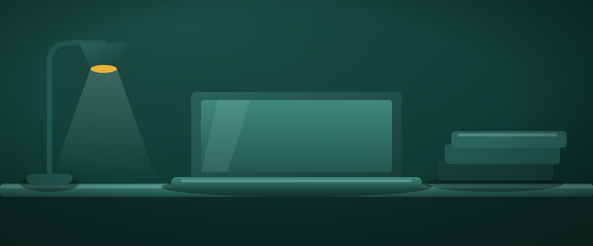

hero · le bureau
7,9/10Une lampe à bras, un portable ouvert de face, une pile de dossiers, tous posés sur la même ligne d'ombre. Le portable a été redressé de trois quarts en élévation pour tenir la perspective du reste.
Ouvrir le SVG →